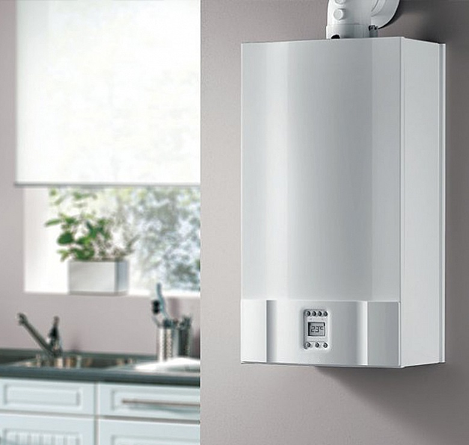
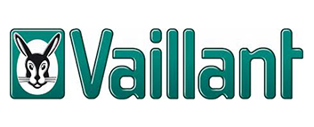

- kotły jedno i dwufunkcyjne
- kotły kondensacyjne
- kotły typu Turbo
- podgrzewacze wody
- podgrzewacze wody
- junkersy, termy, piecyki
Umów serwisanta


Podane ceny są kwotami brutto i obowiązują na terenie Wrocławia (po za granicami do 50 km doliczany jest koszt dojazdu).
Ceny usług nie zawierają części zamiennych. Przegląd techniczny i naprawa są osobnymi usługami.
W przypadku bardziej skomplikowanych napraw cena usługi może ulec zmianie, koszty serwisu są zawsze uzgadniane z klientem przed wykonaniem usługi.
ADGAZ Adrian Gałązkowski
535 438 397
serwis.adgaz@gmail.com
Zobacz opinie
Obszar działalności: Wrocław, Kąty Wrocławskie, Środa Śląska, Oleśnica, Trzebnica, Brzeg Dolny, Jordanów, Oborniki Śląskie.
Poniedziałek - piątek od 8:00 do 18:00
Sobota od 8:00 do 13:00